课程回顾｜未来科技与产业创新创业导引课第三课
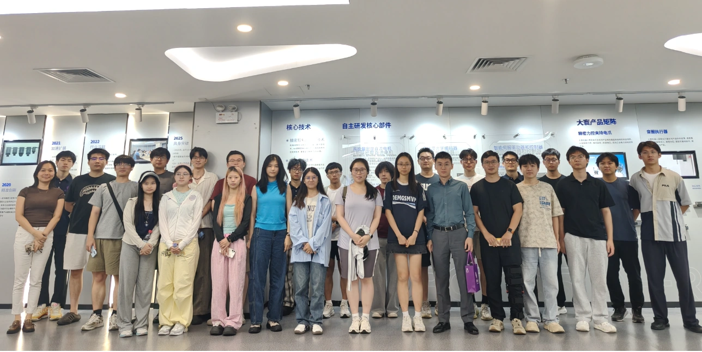
9月29日，《未来科技与产业创新实践》第三课聚焦“材料与先进制造——看清产业机遇，找准发展方向”。下午，同学们走进大寰机器人科技股份有限公司参观学习；晚间，深创投柳佳楠学长、温润投资孙晨曦学姐回到校园，分享产业观察与投资实践。
在企业现场看产品，在校友课堂听判断。本次课程围绕技术如何形成产品、企业如何建立优势、学生如何理解真实需求展开，把材料与制造领域的发展机遇，落到可以观察、可以追问的具体问题上。
近距离看见制造的细节
下午，同学们来到大寰机器人。在大寰董秘金韬与工作人员的带领下，大家先听取产品介绍，再走近展区，参观夹爪、灵巧手等多款产品。不同的结构形态，让机器人末端如何接触物体、完成操作有了更直观的呈现。
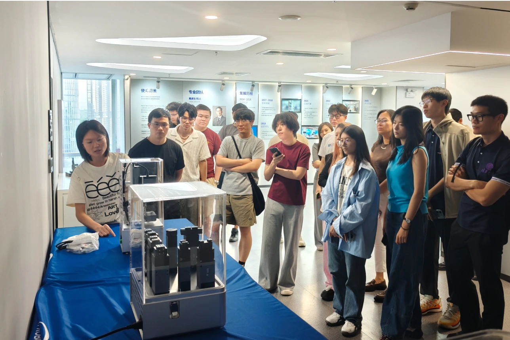
从面向专用夹持任务的夹爪，到适应更多操作方式的灵巧手，产品的差异对应着不同的应用需求。参访也为同学们提供了一个观察制造业的切口：理解一款产品，既要看它采用什么技术，也要看它服务什么任务，以及如何兼顾灵活性与稳定性。
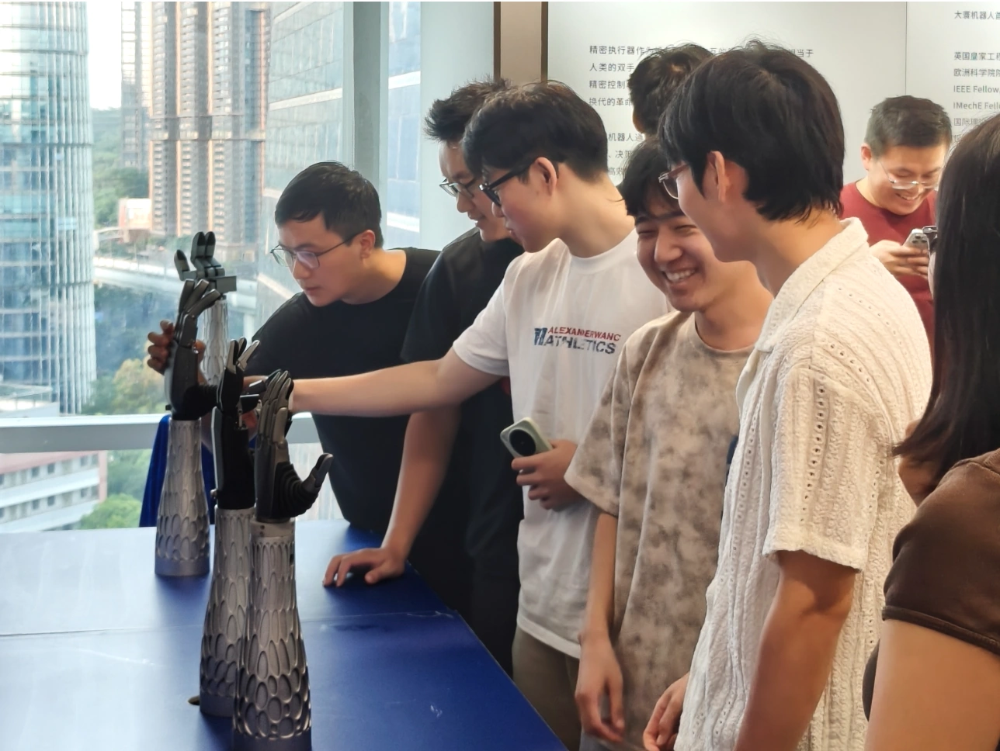
随后，参访转入会议室。大寰董秘金韬进一步介绍大寰机器人的发展与业务，并分享实习岗位信息。从产品展示到企业介绍，再到实习机会，参访将产品、业务与岗位联系起来，也为同学们了解企业、考虑后续实习提供了具体线索。参访结束后，师生与企业代表合影留念，为下午的交流留下记录。
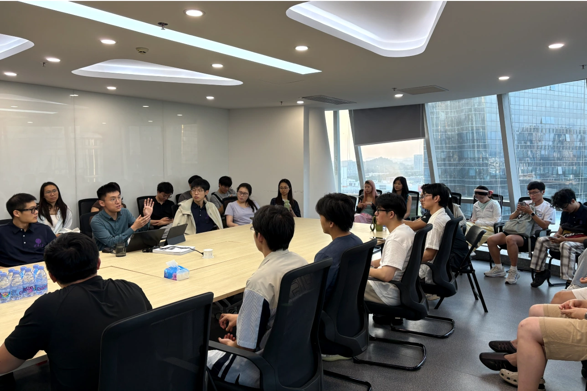
理解技术背后的产业逻辑
晚间，两位身处投资一线的校友走进课堂，结合产业研究与企业案例，和同学们一起梳理材料与先进制造的发展逻辑。
柳佳楠：新材料的产业化路径
深创投投资总监柳佳楠学长从新材料产业的特点切入，介绍材料创新与制备工艺、应用场景之间的联系。实验室里得到一份样品，与生产线上持续交付稳定的产品，中间还隔着中试放大、工艺匹配、客户验证等环节。人员、设备、原料与工艺的协同，是技术走向应用必须面对的课题。
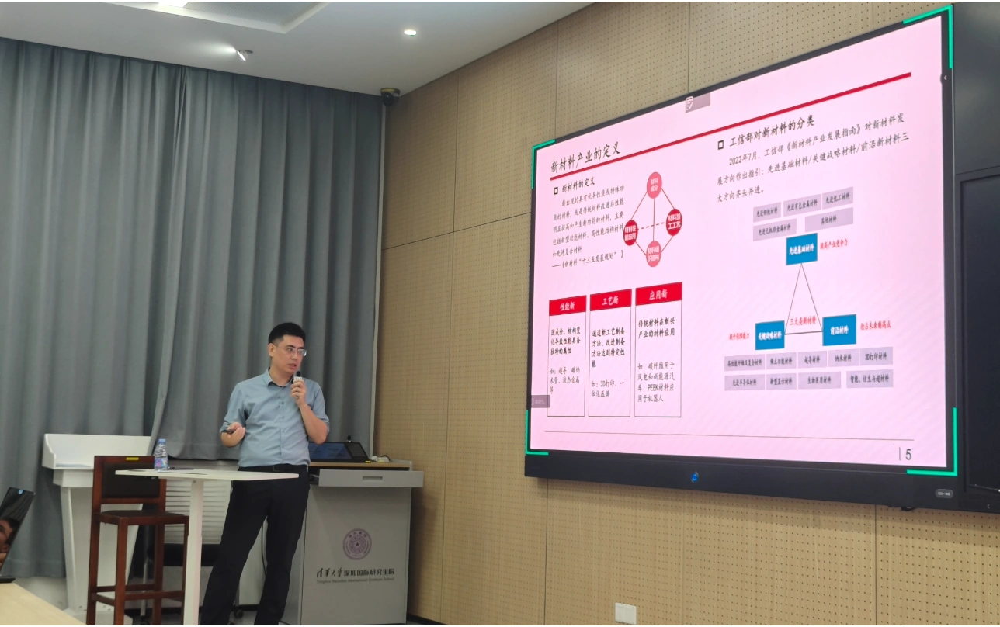
他从技术创新、政策推动、产业升级、进口替代和周期性五个角度，梳理新材料产业的机会来源；又结合京瓷、国瓷材料等案例，讨论企业如何先在细分领域形成优势，再围绕技术、客户与资源协同拓展业务。分享让同学们看见，技术价值的实现，还需要稳定的交付能力与持续的市场验证。
孙晨曦：判断产业所处的发展阶段
温润投资高级投资经理孙晨曦学姐，将视角展开到先进制造。她对照新兴技术炒作曲线与行业发展曲线，说明关注度上升与产业成熟并不总是同步。理解一项机会，需要同时观察技术进展、需求变化，以及团队能否完成相应的工程化任务。
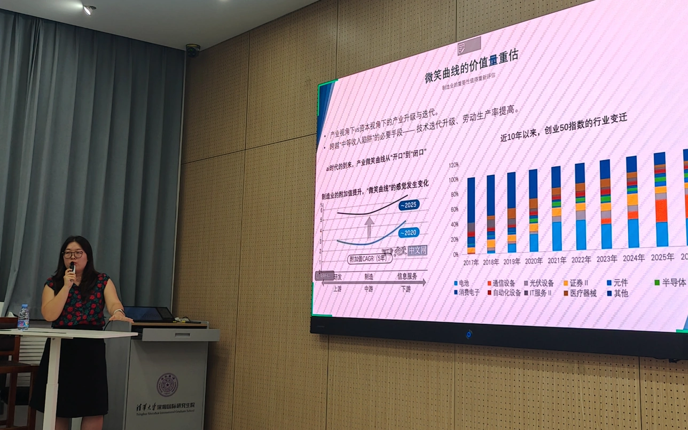
围绕国产替代、下游需求增长和前沿技术三类机会，她分别介绍技术壁垒、客户验证、供应链位置与产业化节点等观察维度。商业航天与工业母机的案例，则进一步呈现不同产业的差异：前者需要关注工程化进展与团队积累，后者还要结合设备需求周期、产品竞争力、渠道和售后能力。判断企业，需要放回它所处的产业阶段。
把问题带回自己的研究与选择
交流中，师生围绕AI与材料的结合、实验室成果放大、创业团队搭建，以及理工科学生如何理解企业需求等问题提问。针对AI与材料的结合，柳佳楠学长强调细分方向中真实数据的积累，也提醒同学们关注AI如何帮助工程化。
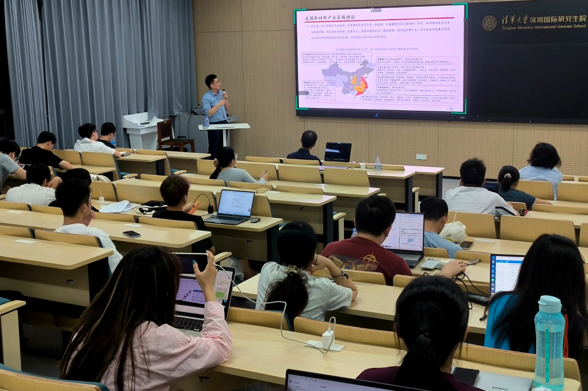
在谈到如何建立行业认识时，孙晨曦学姐建议先借助研报、招股说明书搭建框架，再通过企业走访、实习与校友交流不断校正判断。对同学们而言，了解行业也意味着逐步弄清：谁提出需求，谁验证产品，技术进入真实场景还需要哪些条件。
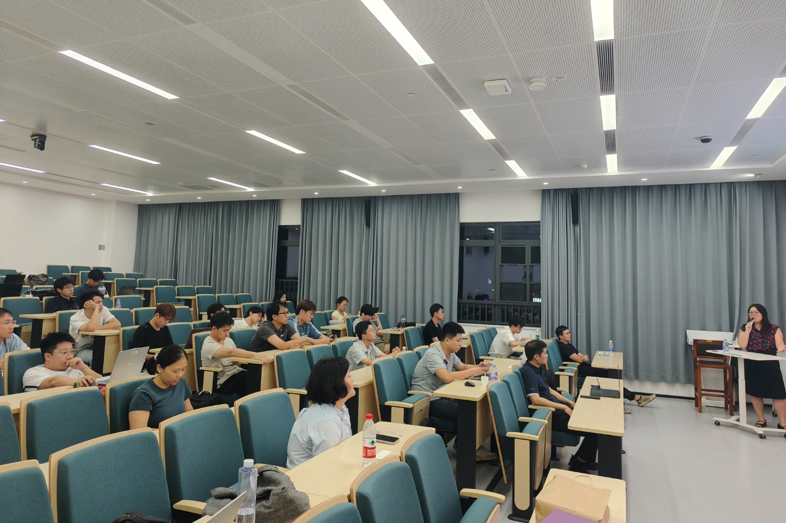
让交流延伸到课堂之外
分享结束后，课程主讲老师彭德利老师分别为柳佳楠学长、孙晨曦学姐颁发授课证书，感谢两位校友把产业一线的观察与经验带回课堂。
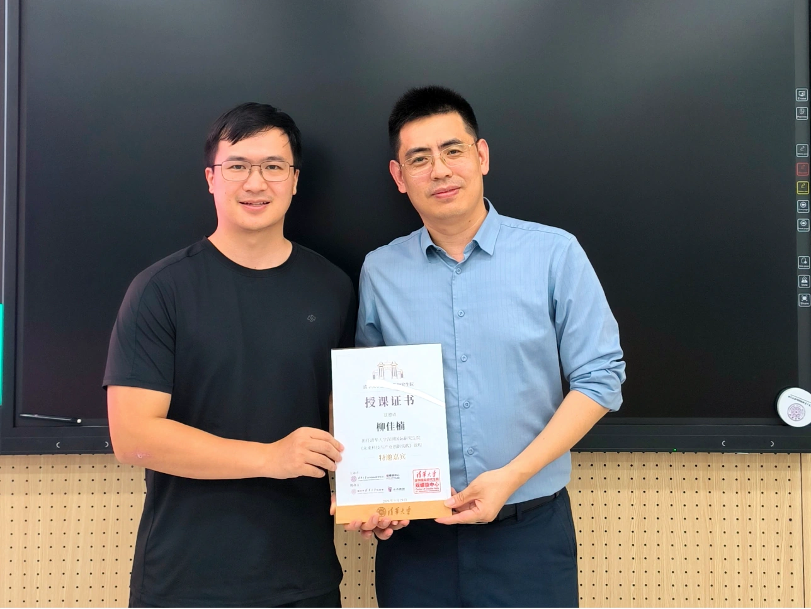
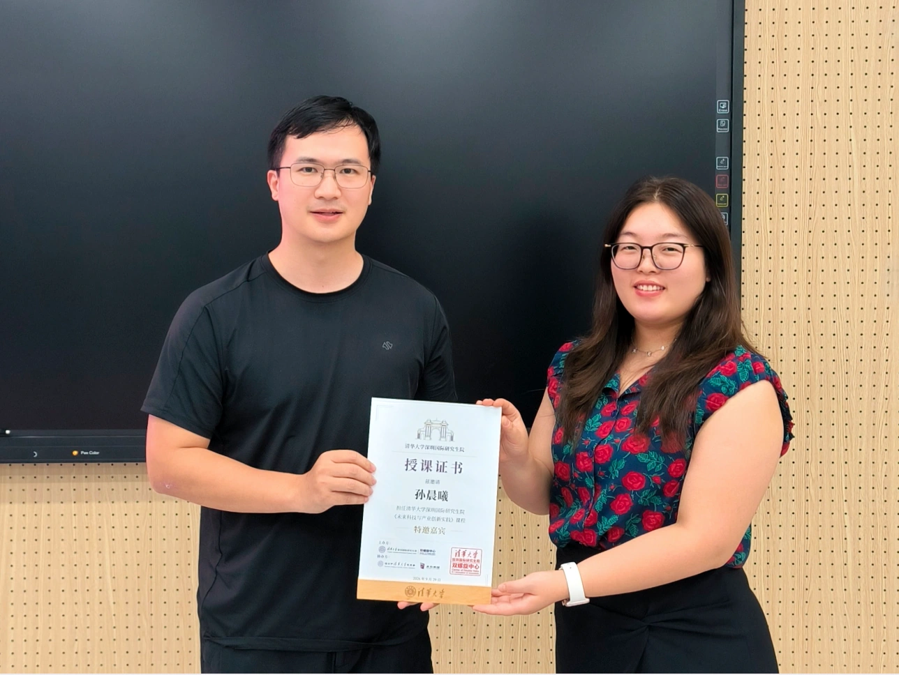
课程最后，水木南国张宇轩学长介绍了南国清华公益路演平台。平台通过常态化公益路演，为校友创业项目对接投资机构、产业伙伴及相关资源，帮助技术团队获得展示、交流与合作的机会，也让同学们进一步了解“校友帮校友”的创业支持网络。
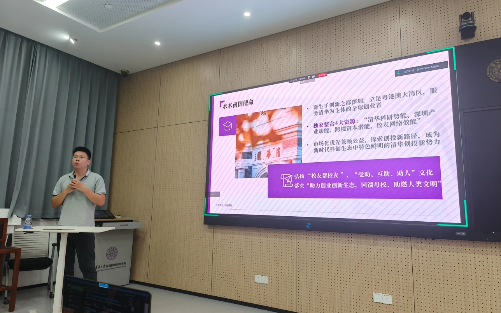
认识产业机遇，需要持续走近企业、理解需求，并检验技术落地的条件。课程希望把这样的观察带回同学们的研究与学习，让未来的发展方向，多一份来自产业真实问题的牵引。
关于课程
《未来科技与产业创新实践》
本课程是一门研究生公共课，设2学分、32课时，共8周。围绕生物医药、材料与先进制造、AI与具身智能等方向，将“前沿理论研讨”与“科创现场调研”相结合，帮助同学们系统认识科技创新、产业发展与科创生态之间的内在联系。
一线投资人、企业创始人及高管走进课堂，同学们也走进企业，看见产品、岗位与应用需求，理解技术背后的转化条件。把研究中的问题带到企业，也把产业中的真实问题带回研究，让接下来的学习与探索，多一份来自真实需求的牵引。
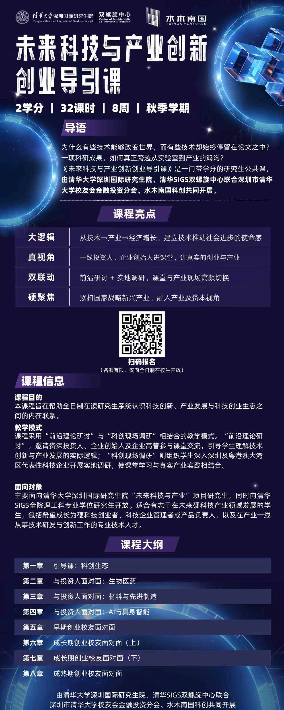